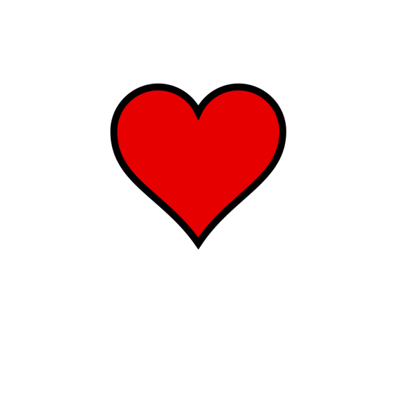
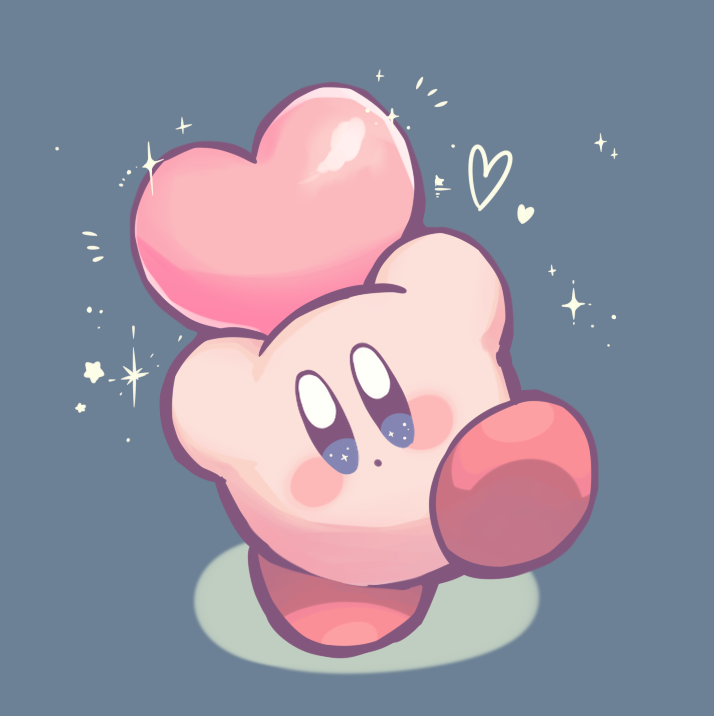
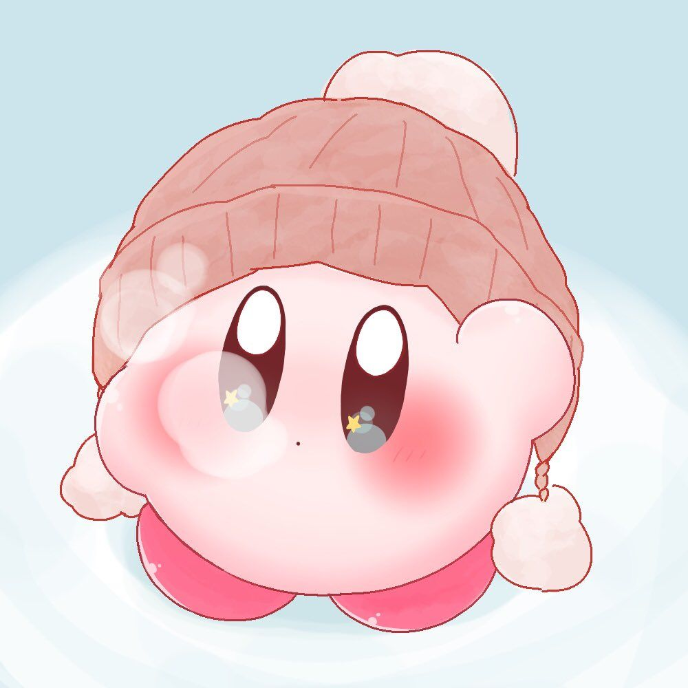
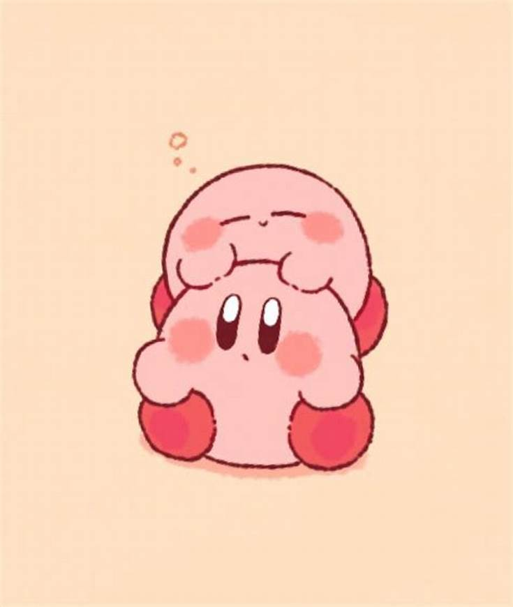
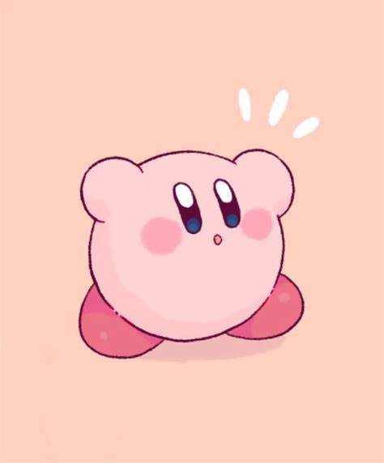
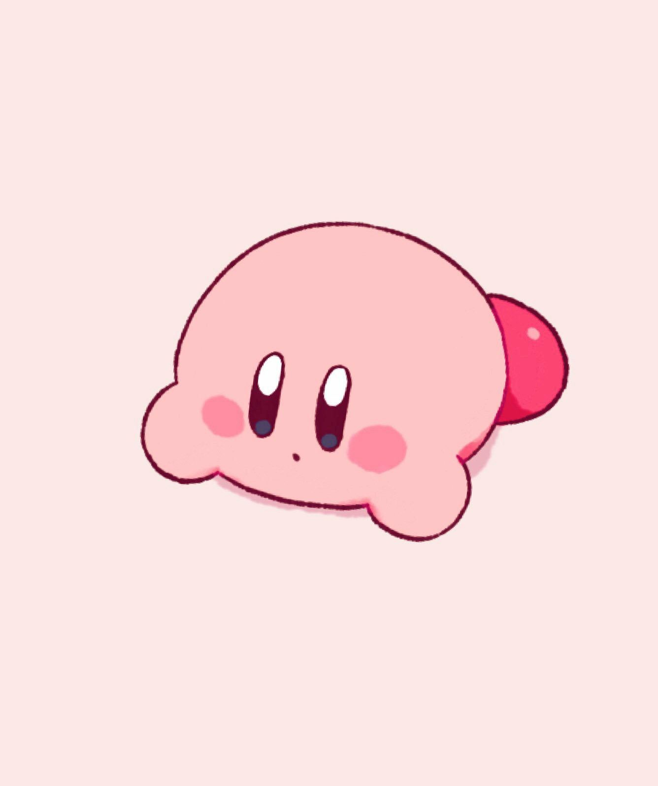
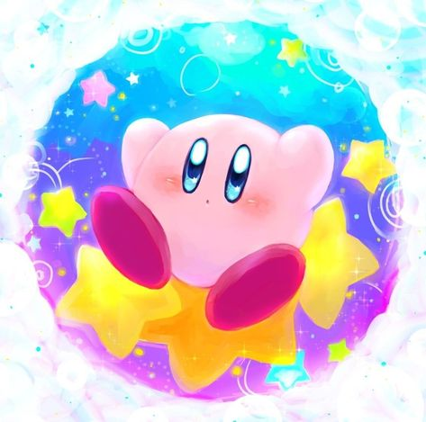

Por que Eu Gosto Tanto de Você?

Porque Você tem tantas
Mas tantas qualidades mesmo
Que é até dificil conta-las
Ou dize-las todas à Você!
Mas eu quero tentar expressar
O que sinto por Ti!
Você é a moça mais Linda
Com o sorriso mais Fofo
Com o Olhar mais doce e meigo!
Por Isso me Encanto assim
Pela beleza que está em você
E que me faz Sorrir!

Sua Fofura é icomensurável
Muito Gentil e Delicada
Muito Amável e Carinhosa
Eu gosto Muito do seu Jeitinho!
Mas muito muito muito mesmo
De todo meu Coração!
Te acho muito Carinhosa
Pelo Jeitinho que me trata bem
Pelo seu olhar meigo e fofo
pela sua companhia maravilhosa!
Seu sorriso lindo ilumina meu dia
Alegra meu coração e me tras alegria!


As vezes você é um pouco distraída
Tambem as vezes é você muito
Mas eu gosto muito do seu jeito!
Acho fofo, e muito maravilhoso
Mesmo quando você é muito tranquila
Mas eu acho isso muito encantador!
As vezes você fica quietinha
Muito pensativa, acho muito fofo!
Gosto de imaginar o que está pensando
Tentando adivinhar e te perguntando!
Nunca conheci ninguem como Você
E isso muito me encanta!


Você é sempre muito tranquila
E as vezes se perde na igreja
Mas eu gosto do seu Jeito
E você tem muita paciencia
Principalmente comigo
Só as vezes fica brava!
Gosto de sonhar com você
Mas quando estou contigo
A minha vida parece um Sonho!
As vezes confundo os dois
E muitas vezes nem acerdito
Que você existe Mesmo!

De Felipe Cagnin
Para Giovanna Carvalho